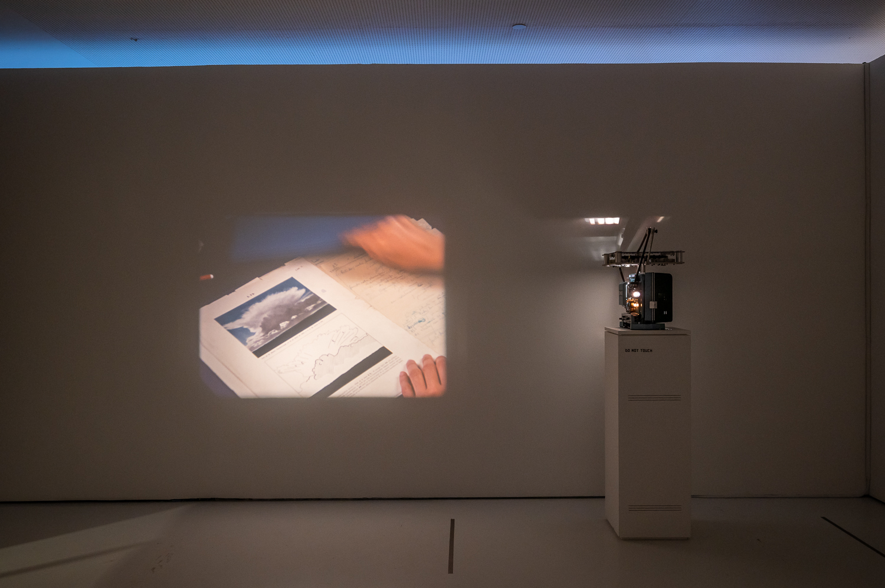
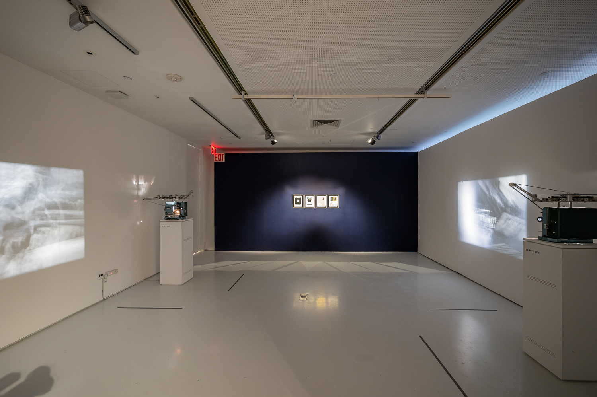

above: installation views / below: film stills


2023
Film installation
2 looped films (16mm, 12:40 mins each, colour and B/W, silent), 4 framed collages (240 x 310 mm, colour and B/W prints and paper)
Shot/featuring: Paula Guerrero, Bruno Delgado Ramo
A commissioned work for the exhibition Cinema of Sensations: the Neverending Screen of Val del Omar (March — October 2023), curated by Almudena Escobar. Museum of the Moving Image, New York
Trágame nube consists of a double projection on 16mm film; two sides of a single film unit that explores an “other cinema” or the potentiality of the other film that hides in the intervals between frames. The project is a commission for the exhibition ‘Cinema of Sensations: The Neverending Screen of Val del Omar’ at the Museum of the Moving Image in New York, focused on the work of the 20th century Spanish filmmaker and inventor José Val del Omar.
‘Trágame, nube (el cuerpo establece el ritmo)’ revolves around some of the most persistent preoccupations about perception Val del Omar expressed in his writings, especially in reference to what he called ‘espejo aprojimante’, both a technique involving film projected onto a mirror to diffract images, and a way to refer to cinema as a system that brings viewers closer to their peers.
The title ‘Trágame, nube’ is taken from a script he wrote in the early 1940s for a documentary about gliding and its schools in Spain. It also refers to the press clippings unexpectedly found when delving into Val del Omar’s original documents for shooting the central part of these twin films, which became the basis of the collages that complement and expand the film installation.
The two twin films have an exact equal structure divided into three parts. The first part is a play tag with Spanish filmmaker Bruno Delgado Ramo at the Alhambra palace in Granada (Spain). This emblematic location is charged with meaning in Val del Omar’s oeuvre, as his film ‘Aguaespejo granadino’ (1953-55) was entirely shot here and he was born in Granada. In ‘Trágame, nube’, the Alhambra palace and its beautiful gardens become the background of a site-specific happening or film-performance played by the artists, and pays homage to Hollis Frampton and Joyce Wieland’s collaborative film ‘A and B of Ontario’ (1984), where both artists chase each other with their Bolex cameras. The second and central part of the film unit is devoted to a selection of Val del Omar’s original documents held at the library of the MNCARS in Madrid, composed mostly of notes, project drawings, sketches, letters, written material for lectures and press clippings. This section is an attempt to penetrate his mind and activate the documents in playful and plastic ways, where gesture plays an important role. The third section of the film evokes Val del Omar's laboratory PLAT (Picto-Lumínico-Audio-Tactil), choreographing actions and interventions in and around the film apparatus. The syntax of cinema finally becomes sculpture and performance.
Val del Omar’s writings, works and projects emphasised the importance of engaging the viewer's body and senses in the cinematic experience. In his work, he often explored the relationship between the body and the film apparatus –ie. his ‘Tactilevisión’ project–, challenging conventional ideas of how films should be viewed and experienced. He believed that the human body was a crucial element in the creation and reception of art, and that film had the potential to activate the viewer's senses and engage them in what he called ‘commotional cinema”. In ‘Trágame, nube (el cuerpo establece el ritmo)’, Val del Omar's interest in the body is reflected in different and significant ways that are inseparable from the body of cinema, inviting viewers to reconsider how their own bodies interact with the films they watch.
Special thanks: Piluca Baquero, Gonzalo Sáenz de Buruaga (Archivo Val del Omar), Jaime Narváez, Javi Álvarez, Xavi Massó, Juan David González & Anja Dornieden, LaborBerlin, MasterLAV, Casa Pibe, Takashi Makino and Yokocine DIA, Centro de estudios del MNCARS, Bilbaoarte, Almudena Escobar.